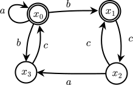

Pumping Lemgths
To summarize the whole situation so far in the course:
\[
\mathsf{TDFin}
= \mathsf{DFin}
= \mathsf{Fin}
= \mathsf{Reg}
= \mathsf{Fin}_\varepsilon
\]
This is to say that there are many models of computation to choose from when it comes to modelling decision procedures for regular languages.
All of these are so expressive that even silent transitions can't escape \(\mathsf{Reg}\)!
So is that it then?
Regular languages are the end of the story?
Well, actually, regular languages are just the beginning.
If you'll remember, from the Finite and Infinite Languages notes, we have already seen a language that didn't appear to have a total deterministic finite automaton associated with it:
\[
L_{a=b} = \{a^nb^n \mid n \in \mathbb N\} = \{\varepsilon, ab, aabb, aaabbb, \dots\}
\]
We were suspicious of the this language because its Brzozowski derivatives never loop back on themselves.
But how do we prove that a particular language is not regular?
It turns out that there are many ways to prove that a language is not regular (including calculating its Brzozowski derivatives, but that is beyond the scope of the course).
But one approach has a particular strength: it's a common technique that you will see all across the sciences!
The slogan goes like this: Suppose that you have a collections of 'things', called \(X\).
And given a particular thing, call it \(y\), we want to prove that \(y \notin X\).
Then we must conjure up a property \(P\) such that every \(x \in X\) satisfies \(P\), but \(y\) does not satisfy \(P\).
This establishes that \(y \notin X\).
In our case, \(X = \mathsf{Reg}\), \(x = L_{a=b}\), and the property \(P\) will have to do with something called a pumping length.
A lot of today has to do with paths of one sort or another.
As the saying goes,
If one has a path, then life is good.
It is helpful to have a bit of terminology on our side.
(Simple Paths)
Let \(\mathcal A\) be an automaton.
A path in \(\mathcal A\),
\[
x_1 \xrightarrow{a_1} x_2 \xrightarrow{a_2} \cdots \xrightarrow{a_{n-1}} x_{n}
\]
is called simple if \(x_i \neq x_j\) for all \(0 \le i < j < n\).
We say that \(\mathcal A\) is a path if it is
The story as it unfolds here is much better done than told, so why don't we just do it?
Necessary Cycles
(Words)
Let \(A = \{0, 1\}\) and consider the language \(L_{\le 3} = \{w \in A^* \mid |w| \le 3\}\).
Attempt to write down all of the words in \(L_{\le 3}\).
How many are there?
Are there finitely many or infinitely many words in \(L_{\le 502332}\)?
Or in \(L_{\le n}\) for some fixed \(n \in \mathbb N\)?
(Cycle)
Let \(\mathcal A = (Q, A, \delta, F)\) be an automaton.
A cycle in \(\mathcal A\) is a path
\[
x_1 \xrightarrow{a_1} x_2 \xrightarrow{a_2} \cdots \xrightarrow{a_{n-1}} x_n
\]
such that \(x_1 = x_n\).
Each of the \(x_i\) is said to appear in the cycle.
A cycle is simple if furthermore, \(x_i \neq x_j\) for all \(0 < i < j < n\) (in other words, there are no other repetitions than \(x_1 = x_n\)).
When all an automaton consists of is a (simple) cycle, then we are going to simply call it a (simple) cycle.
(Finding Cycles)
Consider the state diagram below.

An automaton \(\mathcal A\) with states \(x_0,x_1,x_2,x_3\) with a bunch of different cycles!
Find all of the simple cycles in \(\mathcal A\).
Make note of all of the simple cycles in which \(x_0\) appears (you can use this example later).
(Finite with Cycles)
Draw an automaton \(\mathcal A\) with a state \(x\) such that
- \(x\) appears in a cycle
- \(\mathcal L(\mathcal A, x)\) is finite
What can you tell me about \(\mathcal L(\mathcal A, x)\)?
(With Better Cycles?)
Draw an automaton \(\mathcal A\) with a state \(x\) such that
- \(x\) appears in a cycle
- \(x\) is accepting
What can you tell me about \(\mathcal L(\mathcal A, x)\)?
In particular, how many words does it have?
(Necessary Cycles)
Draw an automaton \(\mathcal A\) with a state \(x\) such that for some nonempty word \(w = a_1a_2\cdots a_n\) (you get to decide which),
\[\mathcal L((w)^*) \subseteq \mathcal L(\mathcal A, x)\]
Necessary Lassos
Ok... so we were dealing with automata and paths and cycles and stuff... where is this going?
... around in circles! Eventually.
(Lasso)
Let \(\mathcal A = (Q, A, \delta, F)\) be an automaton.
A lasso in \(\mathcal A\) is a path
\[
x_1 \xrightarrow{a_1} x_2 \xrightarrow{a_2} \cdots \xrightarrow{a_{n-1}} x_n
\]
such that \(x_m = x_n\) for some \(1\le m < n\) (note that in particular this means \(1 < n\)).
Each of the \(x_i\) above is said to appear in the lasso, and \(x_1\) is said to start the lasso.
A lasso is simple if it is a simple path that is followed by a simple cycle.
When all an automaton consists of is a (simple) lasso, then we are going to simply call it a (simple) lasso.
An easy consequence of this definition is that every cycle is a lasso.
But the converse is not true.
(Capturing the Lasso)
Draw a lasso that is not a cycle.
Is every simple cycle a simple lasso?
(Finding Cycles)
Consider the state diagram below.
An automaton \(\mathcal A\) with states \(x_0,x_1,x_2,x_3\) with a bunch of different lassos!
Find all of the simple lassos in \(\mathcal A\) that start with \(x_0\) (and are not cycles).
(Unnecessary Lassos)
Draw a lasso \(\mathcal A\) with a state \(x\) such that
- \(\mathcal L(\mathcal A, x)\) is finite
- \(x\) starts a lasso
(Necessary Lassos)
Prove the following statement using pictures to illustrate your reasoning:
let \(\mathcal A\) be a finite automaton with a state \(x\), and let \(L = \mathcal L(\mathcal A, x)\).
If \(L\) is infinite, then \(x\) starts a lasso.
Pumps
(Pump)
Let \(\mathcal A = (Q, A, \delta, F)\) be an automaton.
A
pump in \(\mathcal A\) is a path
\[
x_1 \xrightarrow{a_1} x_2 \xrightarrow{a_2} \cdots \xrightarrow{a_{n-1}} x_n
\]
such that \(x_m = x_k\) for some \(1\le m < k \le n\) (again, \(1 < n\))
and \(x_n \in F\).
Each of the \(x_i\) above is said to
appear in the pump, and \(x_1\) is said to
start the pump.
-
The sub-path \(x_1 \xrightarrow{a_1} \cdots \xrightarrow{a_{m-1}} x_{m}\) is called the head of the pump.
-
The sub-path \(x_m \xrightarrow{a_m} \cdots \xrightarrow{a_{k-1}} x_{k}\) is called the body of the pump.
-
The sub-path \(x_k \xrightarrow{a_k} \cdots \xrightarrow{a_{n-1}} x_{n}\) is called the tail of the pump.
That is,
\[
x_1 \mathrel{\overbrace{\xrightarrow{a_1} \cdots \xrightarrow{a_{m-1}} }^{\text{head}}}
x_m \mathrel{\overbrace{\xrightarrow{a_m} \cdots \xrightarrow{a_{k-1}} }^{\text{body}}}
x_k \mathrel{\overbrace{\xrightarrow{a_k} \cdots \xrightarrow{a_{n-1}} }^{\text{tail}}}
x_n
\]
A pump is
simple if every cycle it contains is simple.
An easy consequence of the definition is that every cycle and every lasso is a pump.
(Lil Pump in the Country)
Explain why every cycle is a lasso and every lasso is a pump.
(Loop-de-loop)
Draw a pump that is not a lasso.
Is every simple lasso a simple pump?
(Find the Pump)
Consider the state diagram below.
An automaton \(\mathcal A\) with states \(x_0,x_1,x_2,x_3\) with a bunch of different pumps!
- Find all of the simple pumps in \(\mathcal A\) that start with \(x_0\) (and are not lassos).
- Verify that every path of length \(\ge 4\) starting from \(x_0\) is a pump.
Pumping Lengths
Something happened in that last exercise.
Did you catch it?
There was a particular number, namely \(4\), where any path of length at least \(4\) contained a pump.
This number is pretty special, so we're going to write it down in a definition.
(Pumping Lengths for Automata)
Let \(\mathcal A\) be an automaton (not necessarily finite) with a state \(x\).
A number \(\ell \in \mathbb N\) is called a pumping length for \(x\) if every path of length \(\ge \ell\) starting from \(x\) and ending in an accepting state is a pump.
(Finding Pumping Lengths)
Find a pumping length for each state in each of the following automata.
We haven't said explicitly that every state in every automaton has a pumping length.
This is kind of the point!
Not every one will!
(Pumping, for Automata)
Let \(\mathcal A\) be a finite automaton with a state \(x\).
Then \(x\) has a pumping length.
(Finite, Pumped)
Prove the Pumping Lemma for Automata, i.e., that for any finite automaton \(\mathcal A = (Q, A, \delta, F)\) and any state \(x \in Q\), there is at least one \(\ell\) such that \(\ell\) is a pumping length for \(x\).
This establishes that pumping lengths exist for finite automata (in fact, you just wrote one down explicitly for each finite automaton!).
Now what does this have to do with languages?
There is also a notion of pumping length for languages.
(Pumping Lengths for Languages)
Let \(L \subseteq A^*\) be a language.
A number \(\ell \in \mathbb N\) is a
pumping length for \(L\) if for any word \(w \in L\) such that \(|w| \ge \ell\), there exist three words \(u,p,v \in A^*\) that satisfy the following properties:
- The word \(p\), called the body, is nonempty \[p \neq \varepsilon\]
- Together with the body, the words \(u\) and \(v\), called the head and tail respectively, satisfy \[w = upv\]
- The length of the head and body does not exceed \(\ell\), i.e., \[|up| \le \ell\]
- For any \(k \in \mathbb N\), we can "pump up \(p\) \(k\) times", \[up^kv \in L\]
For example, \(\ell = 1\) is a pumping length for \(a^*\).
This is because for any word \(w \in \mathcal L(a^*)\), that word must be of the form \(w = a^n\) for some \(n > 0\).
If we take \(p = a\), \(u = \varepsilon\), \(v = a^{n-1}\), then
- \(p = a \neq \varepsilon\)
- \(w = a^n = \varepsilon a a^{n-1}\)
- \(|up| = |\varepsilon a| = |a| = 1 \le \ell\)
- for any \(k \in \mathbb N\), \(up^kv = \varepsilon a^k a^{n-1} = a^{k + n - 1} \in \mathcal L(a^*)\)
Note that in order for \(\ell\) to be a pumping length, we need to show that for any \(w\) that is longer than \(\ell\) characters, there exists a breaking-up of \(w\) into \(upv\) such that properties 1.-4. hold.
This is a universal-existential statement: it says that \(u,p,v\) depend on \(w\), and that \(w\) can vary.
(Finding some Pumping Lengths)
Find a pumping length for each of the following languages.
- \(L_1 = \mathcal L(a^* + b^*)\)
- \(L_2 = \mathcal L(a^*b^*)\)
- \(L_3 = \mathcal L((ab)^*)\)
- \(L_4 = \{\varepsilon, ab, ba, aab\}\)
- The language \(L_5 = \mathcal L(\mathcal A, x_0)\) where \(\mathcal A\) is the automaton
Use the Antimirov automaton if you need some direction.
In the last part of that exercise, you probably discovered the following fact.
(Pumping Lengths Coincide)
Let \(\mathcal A\) be an automaton with a state \(x\), and let \(\ell \in \mathbb N\) be any number.
If \(\ell\) is a pumping length for \(x\) in \(\mathcal A\), then \(\ell\) is a pumping length for \(\mathcal L(\mathcal A, x)\).
Let \(\ell\) be a pumping length for \(x\), and let \(w \in \mathcal L(\mathcal A, x)\) be a word of length \(\ge \ell\).
We need to find \(u,p,v \in A^*\) that satisfy the four properties in the definition of pumping length for a language.
We can do this as follows: let \(w = a_1 \cdots a_n\), so that \(n \ge \ell\).
By definition of acceptance in an automaton, there is a path
\[
x \xrightarrow{a_1} x_1 \xrightarrow{a_2} \cdots \xrightarrow{a_n} x_n \in F
\]
Since \(\ell\) is a pumping length for \(x\), this path is a pump.
That means that there are \(1 \le i < j \le n\) such that \(x_i = x_j\).
\[
x \xrightarrow{a_1}
x_1 \xrightarrow{a_2}
\cdots
\xrightarrow{a_i} {\color{blue} x_i}
\xrightarrow{a_{i+1}} \cdots
\xrightarrow{a_j} {\color{blue} x_j}
\xrightarrow{a_{j+1}} \cdots
\xrightarrow{a_n} x_n
\]
Putting all of the above together, we arrive at the following theorem (although the common name for it includes the word "lemma")!
(Pumping, for Languages)
Let \(L \in \mathsf{Reg}\) be a regular language.
Then a pumping length exists for \(L\).